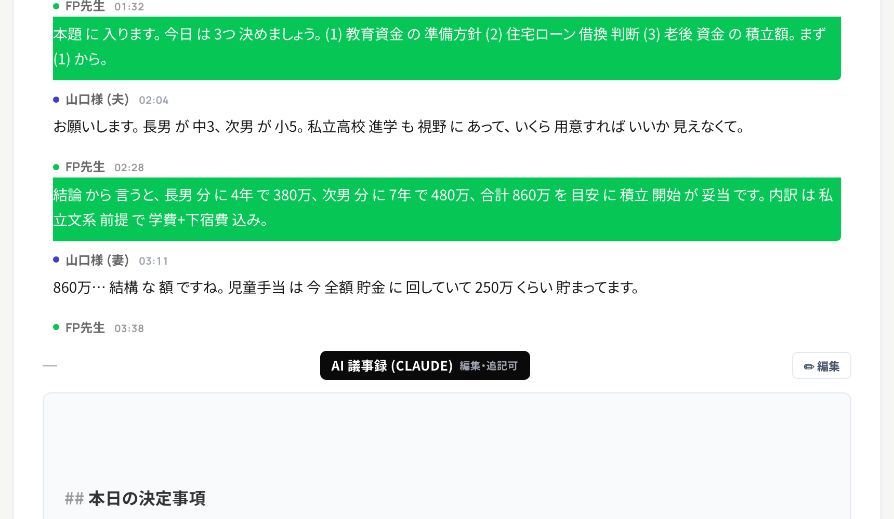
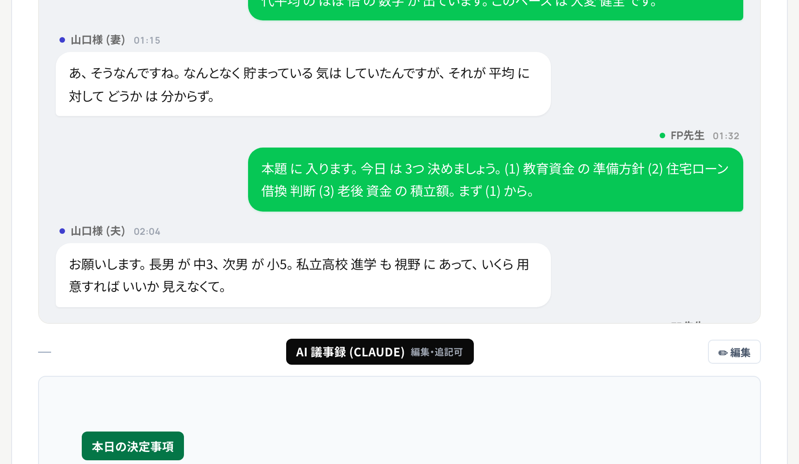
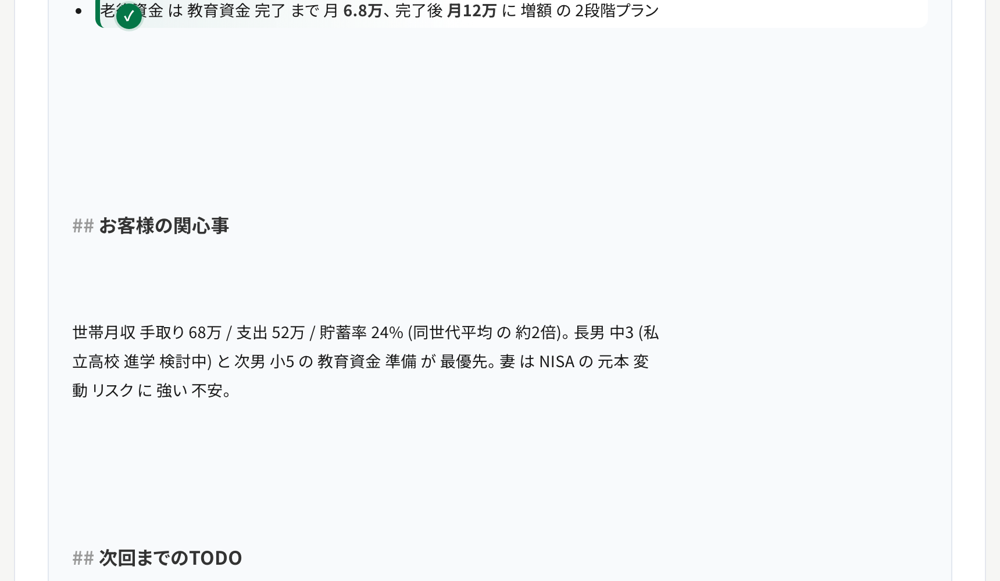
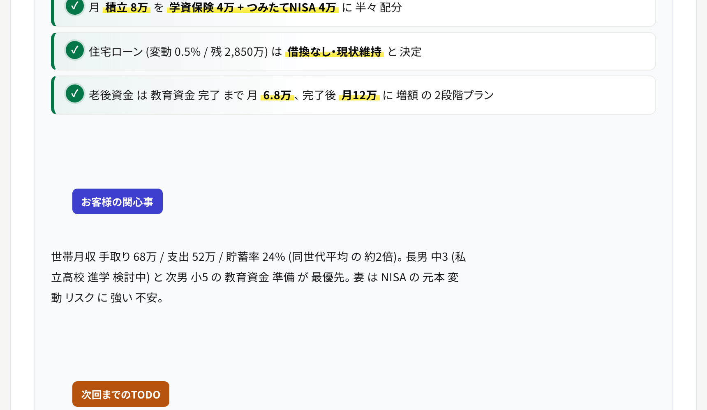
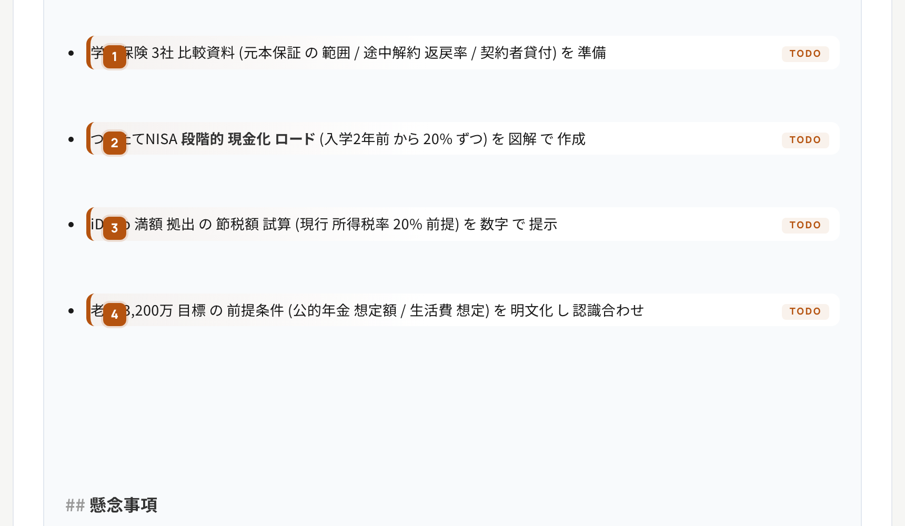
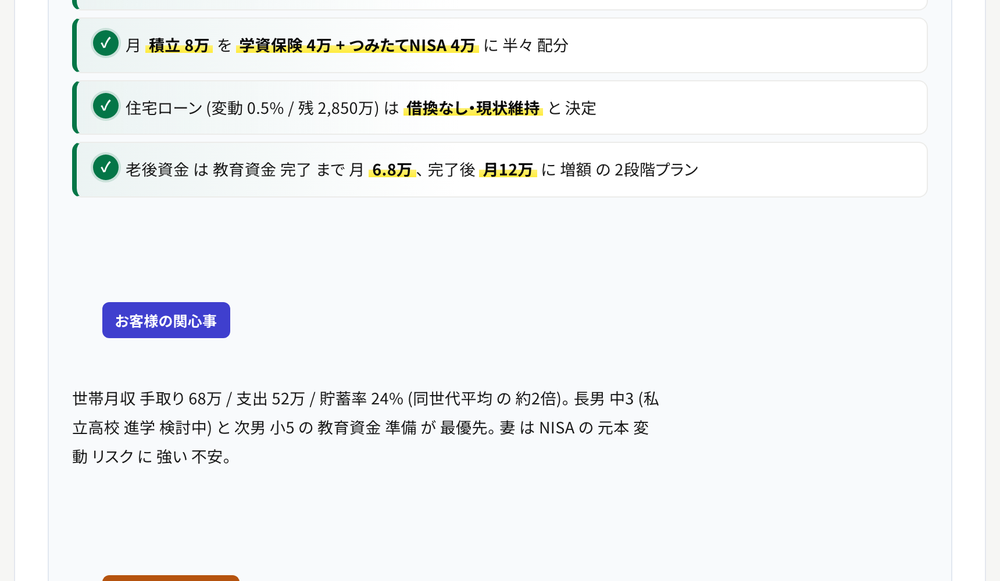
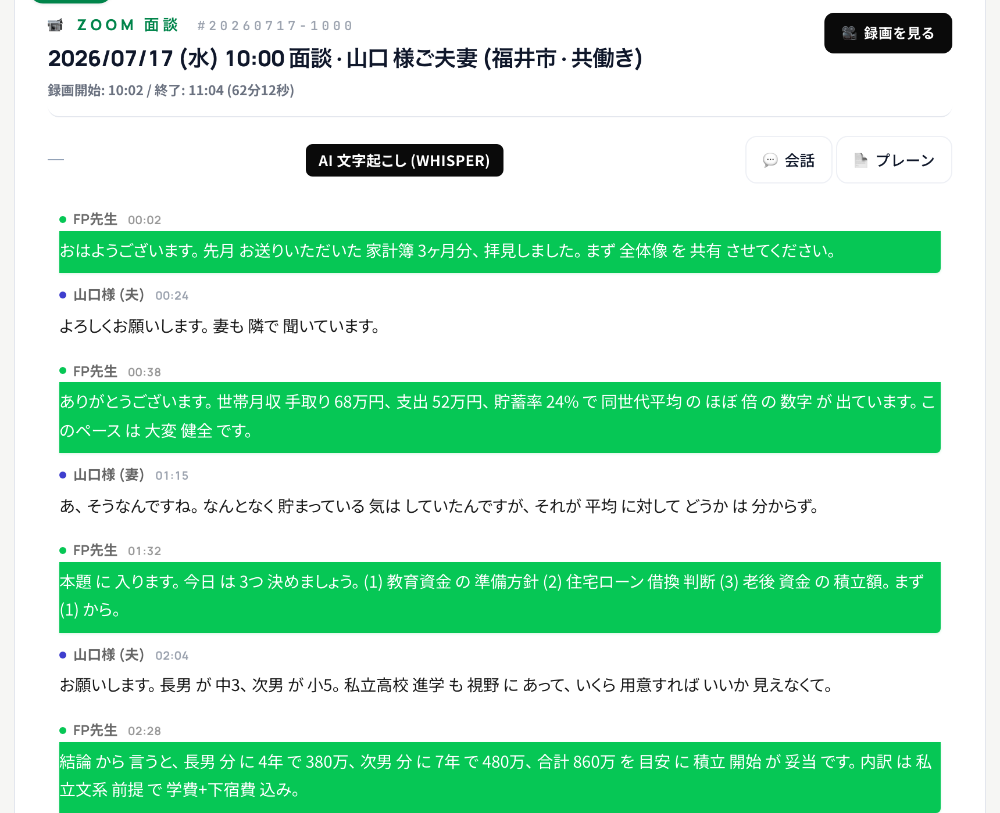
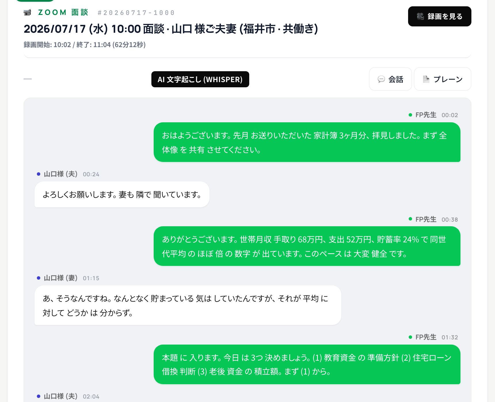

2026-07-16 → 07-17 で 議事録 の 見た目 と まとめ方 を 全面 改修。 4 箇所 × Before/After の 実 スクリーンショット と、 何 が どう 変わった か の 詳細 を まとめました。


見出し は 「## 本日の決定事項」 の markdown 記号 が 生 で 表示。 リスト項目 は 素 の • bullet で、 数字 と 語句 が フラット。 「決まった こと」 と 「まだ 検討中」 が 見た目 で 区別 つかない。
濃緑 solid pill の 見出し で 「決まった 系」 だと 即 分かる。 各項目 は 白カード + 左緑 4px accent bar + ✓緑 チェック chip で 「完了 感」 を 視覚化。 数字 (860万 / 月8万) は 黄色 蛍光ペン で 目 が 引かれる。


「## お客様の関心事」 が プレーン テキスト、 markdown の ## が 見えて 読みづらい。 関心事 と TODO の 区別 が 曖昧。 段落 の 情報密度 が 平板。
濃indigo pill (関心事) と 濃橙 pill (TODO) で セクション を 色分け。 TODO 項目 は 白カード + 左橙 4px accent + 番号 濃橙 chip + 右上 「TODO」 小タグ で 「これから やる こと」 が 一目瞭然。


旧 prompt には 「懸念事項」 section が 存在せず、 リスク / 不確定要素 が どこ に 書かれるか 面談ごと に バラバラ。 「## 懸念事項」 の 生 markdown が 底 に 見える だけ。
濃赤 solid pill で 独立 section 化。 各リスク は grid 型 alert card (左に ⚠濃赤 pill label / 右に 詳細) で 「ラベル と 説明 が 縦積み せず 横並び」 で 読める。 「-30% で 現金化 リスク」 等 の 数字 も 蛍光ペン。


話者名 + 発言 が 同じ緑帯 に 潰れて 表示。 誰 が どの 発言 をした か 一瞬 で 追えない。 発言 と 発言 の 境目 も 弱く、 長い 面談 を スクロール すると 迷子 に なる。
LINE そっくり の 緑/白 吹き出し (右 = FP先生 緑 / 左 = 山口様 白)。 話者名 と 時刻 は 吹き出し の 上 に 小さい meta、 発言 本体 は 独立 の 吹き出し。 淡グレー wall 背景 で 「会話 の 場」 感 が 出て、 誰 が 何 を 喋った か 一目 で 追える。
| 場所 | Before | After |
|---|---|---|
| 見出し | 生 の ## 本日の決定事項 |
本日の決定事項お客様の関心事次回までのTODO懸念事項議論した数字 の 5トーン 濃色 pill |
| リスト項目 | 素 の • bullet、 全部 同じ 見た目 | 白カード + 種類別 marker (決定=✓緑 / TODO=番号橙 + 右上「TODO」タグ / 数字=左3px ink bar) |
| 数字 / 大事な語句 | 普通 の bold | 黄色 蛍光ペン マーカー (860万 / 月8万 / 借換なし・現状維持 等) |
| 懸念事項 | 見出し すら 未生成 (旧 6 section 内 に 存在せず) | 濃赤 alert card + ⚠pill label + grid型 「ラベル / 詳細」 横並び |
| 会話 (Whisper) | 話者名 + 発言 が 同じ緑帯 に 潰れて 読みづらい | LINE 吹き出し (右=緑 advisor / 左=白 client、 淡グレー wall) |
| 要約 の 構成 | 6 section バラバラ (面談ごと に 揺れ、 懸念事項 抜け) | 5 section 固定 (どの面談 も 同じ形、 見出し 一字一句一致) |